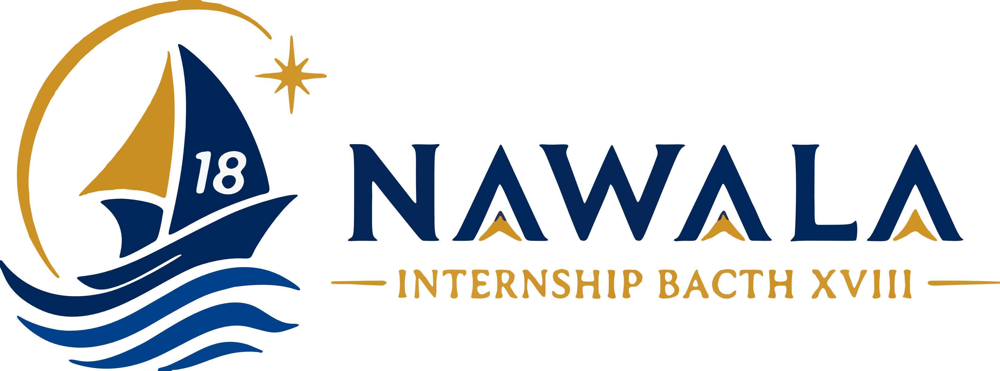

MEMORIES NAWALA
Internship Rumah BUMN BRI Makassar • Batch 18
Menyiapkan kapal pelayaran Nawala... 🗺️
🎵 Mengalunkan lagu: One Piece - Memories
YEAR BOOK NAWALA
BATCH 18 • RUMAH BUMN MAKASSAR
❮
❯
❮
Sampul Depan
❯
🔍
⛶
🎵
✕
LEADER
Nama Kru
Divisi Kru
⚓ PESAN UNTUK BATCH 18 ⚓
Pesan...
💬 Quote Pribadi:
“...”
🌊 Kesan Selama Magang:
...
🏆 Pencapaian:
...
THE JOURNEY OF NAWALA
📥 Unduh Video
✕
Tutup